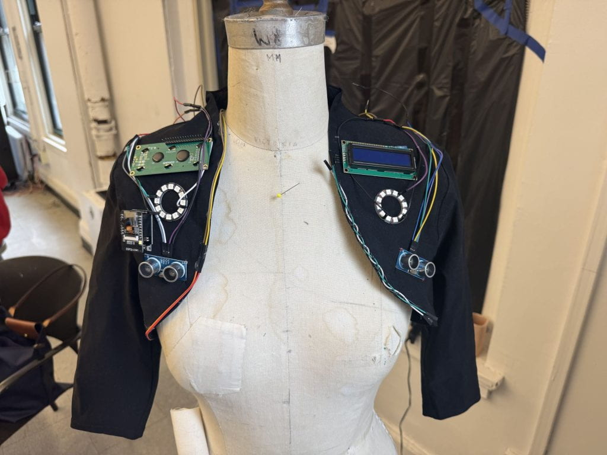
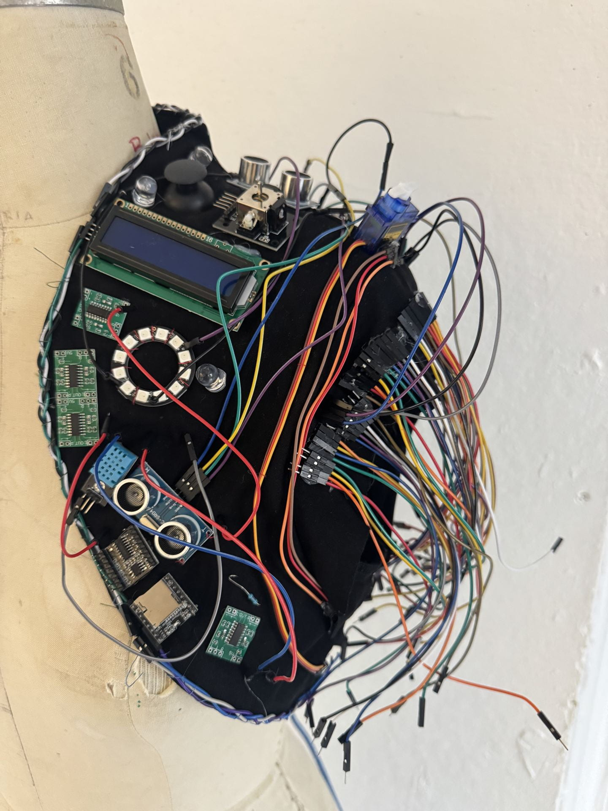

Perimeter is a wearable sculpture embedded with ultrasonic sensors that detect proximity in real time, triggering LED light patterns as people or objects draw near. The technology is intentionally left exposed sensors on the surface, wiring visible, salvaged circuit boards worn as ornamentation because the material is the meaning. The piece frames the body without enclosing it, suggesting protection without claiming to offer it. It borrows the logic of defense technology and places it on the body, where it becomes something more personal: the instinct to know when something is coming, to have your edges acknowledged, made suddenly wearable.
Perimeter is built on an Arduino Uno, which reads input from two HC-SR04 ultrasonic sensors mounted on the left and right sides of the garment. Each sensor continuously measures the distance of nearby objects; when something enters a set proximity threshold, the Arduino triggers a NeoPixel ring, activating a light response in real time. The two sensors operate independently, meaning the light can respond asymmetrically depending on which side detects movement first. The code runs a continuous loop in Arduino IDE (written in C++) that polls both sensors, maps the distance readings to LED brightness and pattern behavior, and updates the NeoPixel ring accordingly. The closer the proximity, the more activated the light response becomes. For construction, the NeoPixel ring and sensors are secured to the fabric base using a combination of hot glue and hand-sewing — hot glue to anchor components in place, and stitching to reinforce attachment points that bear tension or movement. Wiring is routed along the surface of the garment rather than hidden, and salvaged circuit boards and electronic components are hand-sewn on as decorative elements. The Arduino and power source are integrated into the structure of the piece, worn on the body.

Perimeter was created for Space and Material, a studio course at Parsons School of Design focused on exploring the relationship between sculpture and the body. The assignment asked students to investigate how physical materials, form, and space interact with and around the human figure. I used this as an opportunity to push into wearable and interactive territory asking what it means when a sculptural object doesn't just sit on the body but responds to the space the body occupies. The result is a piece that lives somewhere between garment, sculpture, and sensor system, using the body as both its structure and its subject.

Perimeter